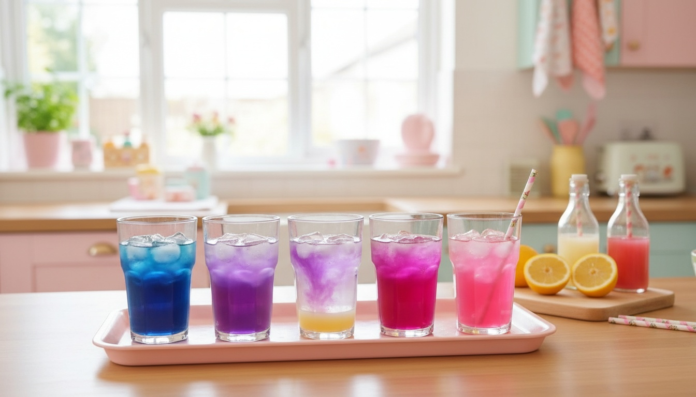

More than a recipe list
✨ Magic Moments
A color change, a buried treasure, a secret message: something your child makes happen.
🧒 Little Helper jobs
Real kitchen jobs sorted by age (3+, 5+, 7+). Kids eat what they help make.
📖 Story Starters
Two or three sentences to read at the table. Every dish gets a story.
⏰ Make-ahead & safety
Lunchbox prep, freezer tips, and choking and allergy notes where they matter.
A little peek inside
All 30 exclusive recipes
Bento Box Makeovers
- Sleepy Sushi Bears
- Under-the-Sea Aquarium Bento
- Secret Message Sandwich
- Caterpillar Pinwheel Parade
- Pizza Planet Solar System
- Ladybug Garden Box
- Construction Site Bento
Hidden Veggie Magic
- Color-Changing Galaxy Pancakes
- Sunshine Mac & Cheese Monsters
- Chocolate Mud Garden Pudding
- Pink Unicorn Muffins
- Superhero Power Pops
- Hedgehog Hide-and-Seek Meatballs
- Cloud Sheep Mash
- Crayon Box Veggie Fries
5-Minute Cute Hacks
- Apple Monster Mouths
- Toadstool Egg Houses
- String Cheese Octopus
- Wise Owl Toast
- Tiny Pumpkin Patch
- Lion Rice Cakes
- Magic Wand Fruit Skewers
Kid-Party Showstoppers
- Color-Changing Potion Lemonade Bar
- Dino Dig Excavation Cups
- Fairy Garden Snack Board
- Mermaid Smoothie Bowl Bar
- Galaxy Frozen Yogurt Bark
- Build-a-Monster Sliders
- Balloon Bouquet Carrot Cake Pops
- Rainbow Jelly Aquarium Cups
Plus 4 fan favorites: Banana Dolphin Fruit Bowl, Dragon-Power Pancakes, Teddy Bear Bites, Unicorn Cupcake Party Tower.
And the extras that make it easy
- A 2-week lunchbox plan with Sunday prep and shopping lists
- A printable Brave Taster sticker chart
- The Science of Color Magic: why butterfly pea flowers change color
- Penny's Toolkit: the cutters and molds worth buying